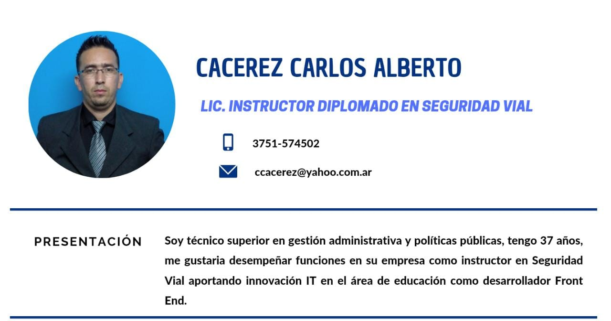

CURRICULUM VITAE

EDUCACION FORMAL
2021- presente Licenciatura en políticas públicas
Universidad 3 de febrero
2019-2021 técnico superior en gestión administrativa y políticas publicas
Instituto IMES
1998-2003 técnico en equipos e instalaciones electromecánicas
Escuela provincial de educación técnica EPET Nº 15
EXPERIENCIA LABORAL
Municipalidad de Eldorado
Instructor en Seguridad Vial
- Jefe A/C de instrucción y Seg. Vial
- Examinador Teórico- Practico
- Operador de sistema SINALIC
- Disertante en institutos terciarios y Universitarios
Agente de tránsito
- Planificación y ejecución de proyectos
- Coordinación y control de tránsito
- Análisis y evaluación de estadisticas
COMPETENCIAS BLANDAS
- Proactivo-trabajo en equipo
- Responsable-empatia
- Autodidacta-escucha activa
INFORMACION ADICIONAL
- Disponibilidad horaria
- Licencia de conducir
- Movilidad propia
- predisposición para aprender y voluntad de superación
REDES
twitter
facebook
instagram
linkedin
contactos